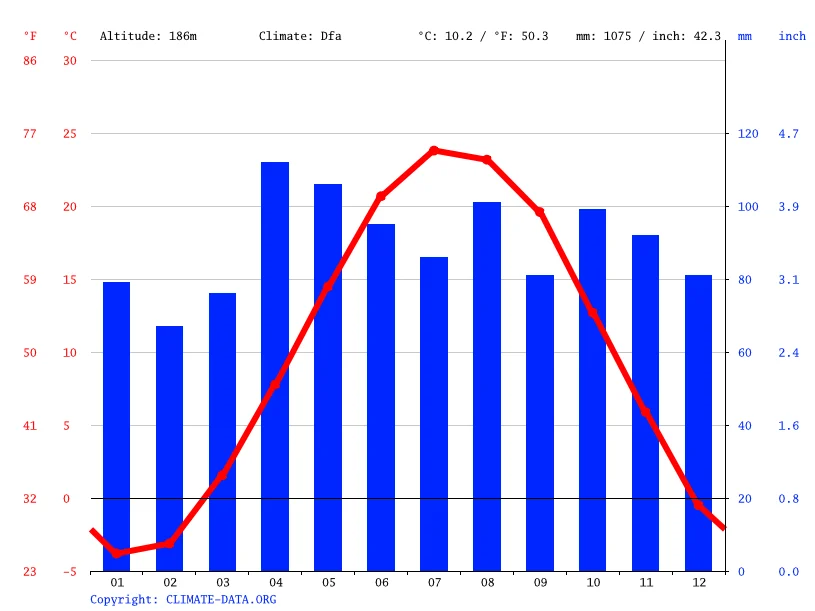
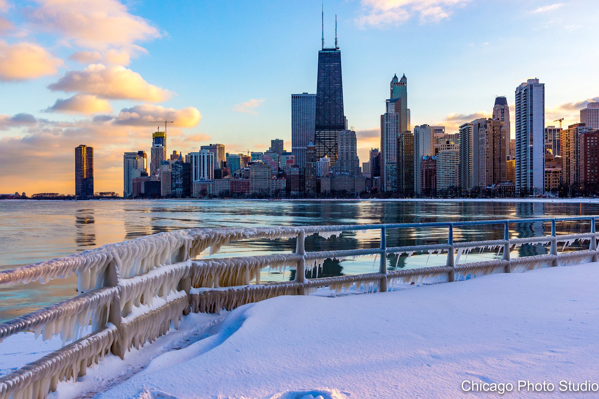
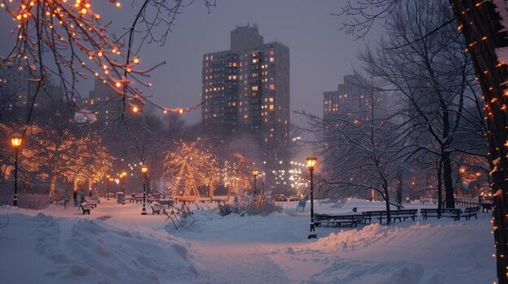
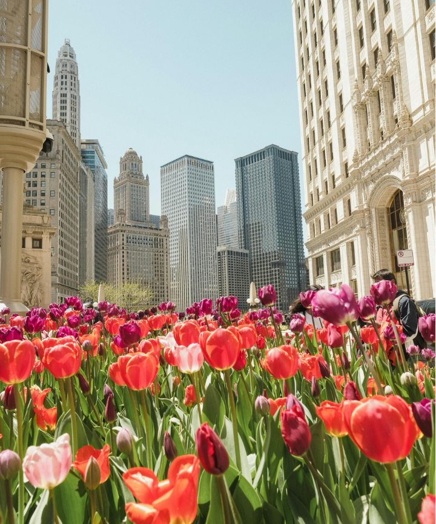
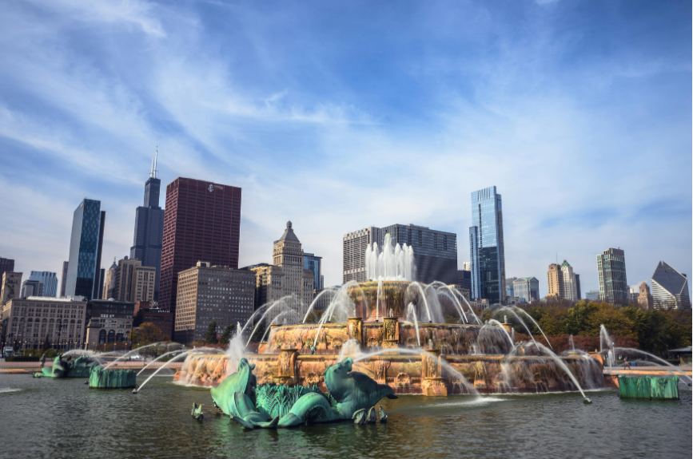

Examples of Chicago Weather
Summers (June through August) are characteristically warm, humid, and sunny. High pressure systems pulling warm air up from the Gulf of Mexico bring daytime temperatures consistently into the 80s°F (27–32°C), with occasional heatwaves exceeding 90°F (32°C). Summer is also the wettest season of the year, with precipitation predominantly driven by short-duration, high-intensity severe afternoon thunderstorms.
Average Weather Temperatures

Winter (December through February) is dominated by freezing temperatures, frequent cloud cover, and polar air incursions. Sub-zero Fahrenheit temperatures occur periodically when the polar vortex shifts south, dropping ambient temperatures below 0°F (-18°C) and generating dangerous wind chills. Sky cover peaks in mid-winter, with overcast conditions prevailing over half of the time during January.
Picture of Winter Last December

Chicago's 2025–2026 winter brought a mixture of freezing temperatures, snowfall and occasional milder days. Temperatures averaged around 27°F (-3°C), with January being the coldest month. During some extreme cold spells, temperatures dropped below 0°F (-18°C), while strong winds made it feel even colder, sometimes reaching wind chills of -20°F to -40°F. December and January experienced regular snowfall, icy sidewalks and difficult travel conditions, while February brought some relief with occasional warmer temperatures reaching around 65°F (18°C). Overall, it was a typical challenging Chicago winter, with freezing mornings, bitterly cold days, snow-covered streets and unpredictable temperature changes.
City view during winter

During winter, Chicago transforms into a beautiful but often harsh winter landscape. The city's iconic skyline is surrounded by grey skies, snow-covered rooftops and buildings, while streets, sidewalks and parks are blanketed in white snow. Lake Michigan often looks especially dramatic, with cold winds sweeping across the waterfront and icy patches forming along the shoreline. Trees lose most of their leaves, creating a bare, quiet atmosphere, while city lights, decorated buildings and snow-covered streets add a unique charm, particularly at night. Despite the freezing temperatures, Chicago maintains its busy city life, with commuters bundled in heavy coats, traffic moving through snowy roads and public transportation continuing to serve residents. Overall, winter gives Chicago a completely different appearance, making the city feel colder, quieter and almost like a winter postcard.
Spring (March – May)

Spring in Chicago marks the transition from the cold winter months to warmer, more comfortable weather. Temperatures gradually rise, although occasional cold days and rainfall are still common. The city begins to come alive with blooming flowers, greener parks and trees regaining their leaves. Residents spend more time outdoors, enjoying walks, cycling, outdoor dining and visits to the city's parks. Overall, spring brings a refreshing change to Chicago's scenery, weather and everyday lifestyle.
Summer (June – August)

Summer in Chicago brings warm temperatures, longer daylight hours and plenty of outdoor activities. The city becomes lively, with green parks, busy streets and beautiful views along Lake Michigan. Residents and visitors take advantage of the warmer weather by visiting beaches, attending festivals, enjoying outdoor dining and exploring the city. Temperatures can occasionally reach 90°F (32°C) or higher, with humidity and thunderstorms also common. Overall, summer is one of Chicago's most vibrant and active seasons.